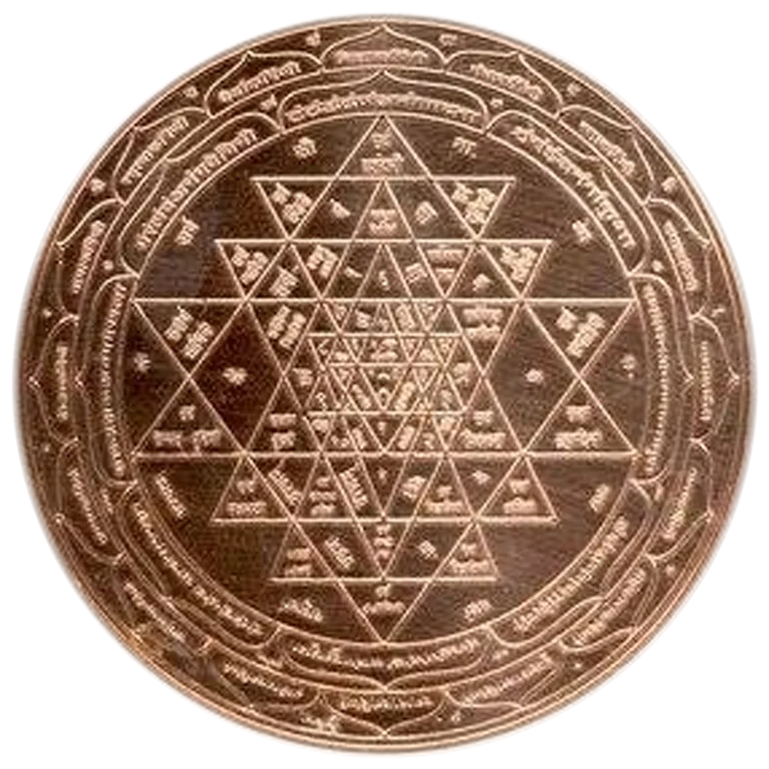

Frequently Asked Questions
Everything you may want to know before taking Sannyas in KAILASA.
Questions
What does taking Sannyas mean in daily life?
Sannyas is the ultimate lifestyle: a life in which completion is the only priority, lived every day inside a clear spiritual practice.
Having Completion in your laundry list is the life of common man. Having Completion as the first priority in your laundry list is the life of a Seeker. Having Completion as the only priority is the life of Sannyas.
THE SPH, satsang of 22 Nov 2013
At least a billion people should consider Sannyas as an option, alternative lifestyle. I don’t even want to use the word “alternative lifestyle”; it is a disrespect. Ultimate Lifestyle!
THE SPH, satsang of 18 Nov 2013
Can I return to my previous life after taking Sannyas?
Sannyas is a lifetime decision. It is the permanent, irreversible shift in cognition that THE SPH describes in his commentary on the Jabala Upanishad.
Will you ever want to go back to the life of a pig after living a human life? […] if you have experienced the life of a human-being, you would not like to go back to the life of a pig or a stone. So, sannyas life is a space of sannyas. If you experience that, you will never feel like going back! If somebody feels like going back, they have changed the route, they have not changed the space! Sannyas has a deeper dimension. It is changing the space, not changing the route.
THE SPH, satsang of 26 May 2013
Such a question comes from a powerless space, and it falls away once the initiation takes you into the space of Sannyas.
Will I still have contact with my family and friends?
At certain period of your life, before the curd gets churned, when the milk is becoming curd, it needs to be left untouched, unmoved, unshaken. […] once it becomes curd, all the shaking, churning, everything only brings the butter out.
THE SPH, satsang of 13 Aug 2017
Can I marry or have a family after taking Sannyas?
Sannyas is a lifetime decision. There is no looking back: you burn everything before and everything after, and are completely liberated.
This is not running away from responsibilities. It is taking up the ultimate responsibility. Evolving from smaller responsibilities to the largest, the Sannyasi lives Vasudhaiva Kutumbakam: the whole world is one family.
If you complete with your spouse, legally, you can take Sannyas.
THE SPH, The Ultimate Renunciation (Nithyananda University Press, 2026)
Do Sannyasis have financial independence or rely on the community?
As laid down in the Hindu Shastras, the basic needs of a Sannyasi are given free of cost, and Sannyasis are supported by the Sampradaya. In KAILASA, THE SPH himself takes care of all the basic needs of every Sannyasi, and of everything required to carry out their mission.
What is the daily routine of a Sannyasi?
A Sannyasi has a clear sadhana, a clear set of spiritual processes: yoga, puja, powerful cognitions through satsang, and power manifestation. Alongside this, each Sannyasi takes up a department or ministerial responsibility, or whichever responsibility is assigned to the mission.
Will I have personal guidance from Swamiji after taking Sannyas?
Yes. Becoming a Sannyasi, taking the KAILASA vows, is the last decision we take. After that, THE SPH completely takes care of our life and our enlightenment, and guides us in every moment of our life.
Can Sannyasis use technology, like phones, computers, or social media?
Yes. In KAILASA we provide comprehensive AI and security support, so that each person stays integrated with the vows of Sannyas and is, at the same time, able to carry out all the activities assigned for the mission.
Can Sannyasis play video games, watch movies, or listen to music?
Everything in KAILASA is centred on moving us to the ultimate experience. Authentic Hindu music and dance, and the ancient sciences and arts that are being revived, are part of daily life, to experience and to perform. Whatever expands our consciousness and moves us toward enlightenment is encouraged and welcomed.
Can I travel outside the ashram or country after taking Sannyas?
Yes. As a Sannyasi of the Sovereign Order of KAILASA’s Nithyananda, there is wide opportunity to travel across the world, depending on your designation and on the guidance and blessings for the mission. Travel is for the purpose of fulfilling the mission of KAILASA, in an official capacity as a representative of KAILASA.
Do Sannyasis wear specific clothing or have outward symbols?
Yes. Each order of Sannyas has its specific clothing, provided to the Sannyasi and worn to support each one on the spiritual path. As the spiritual guidance comes, it may change at different times, always leading each one toward their ultimate experience.
What if I feel doubts or fears after taking Sannyas?
These are hypothetical questions, and they come from a powerless space. Once you actually take the jump, the power of the initiation ensures that you are successful on your path, and the question becomes irrelevant.
How many ever questions, doubts, incompletions, impossibilities, fears, guilt, resistance, tiredness, boredom, you may manifest towards the idea of Sanyas […] you need to be left in that kind of a vatavarana with Initiation, for some time being.
THE SPH, satsang of 13 Aug 2017
Can I continue personal hobbies and interests?
Yes. In KAILASA, the skills and interests you bring are used to support you on your spiritual path and to advance and expand the mission of KAILASA. At the same time, you have the opportunity to experience every dimension of your being to the ultimate, because Sannyas is about manifesting completion in all its dimensions.
How does Sannyas help in managing stress, relationships, and emotional challenges?
Sannyas is ultimate fulfilment and ultimate completion. Stress, relationship and emotional struggles do not remain a part of life, because every dimension of your being that needs to be fulfilled is fulfilled: relationships, emotions, career, enlightenment.
Having Completion as the only priority is the life of Sannyas.
THE SPH, satsang of 22 Nov 2013
What is the process to take Sannyas from Swamiji?
First, apply and submit all the documents. KAILASA’s Department of Immigration reviews them, supports you and guides you through the process.
Then you attend three seasons of the Paramashiva Sena program, to settle into the lifestyle of KAILASA and experience it before taking your final and ultimate decision.
Are there prerequisites or qualifications to take Sannyas?
No. Sannyas is a call from THE SPH, and nobody can know it unless he calls you. The seeking for awakening itself means that Paramashiva is calling you, so there is no prerequisite or qualification.
The only qualification is to take the decision, with your totality, and then to live all the vows of Sannyas authentically, to the best of your ability. THE SPH takes care of everything else.
You don’t need anyone’s permission. You don’t need to check your horoscope or wait for an auspicious day. Tad ahareva pravrajet: that very day you should go forth. The inner readiness is the only authority.
THE SPH, The Ultimate Renunciation (Nithyananda University Press, 2026)
Do I need to have money when I come for Sannyas or KAILASA residency?
During the Paramashiva Sena program, food is provided. Accommodation you arrange for yourself.
Once you become part of KAILASA and take Sannyas, you will not need money, and you should not hold any, because of aparigraha, the vow of non-possession. Everything a Sannyasi uses is provided by THE SUPREME PONTIFF OF HINDUISM (SPH) BHAGAVAN NITHYANANDA PARAMASHIVAM and blessed by him; we use only what is given by the Guru and KAILASA.
Are there any fees, visa costs, or citizenship/residency charges to join KAILASA?
No. There is no application fee for the KAILASA visa, residency or citizenship, and no living expense to live in KAILASA: USD 0. Everything is provided by THE SUPREME PONTIFF OF HINDUISM (SPH) BHAGAVAN NITHYANANDA PARAMASHIVAM.
Until you take Sannyas and join KAILASA, you provide for yourself, including your travel to the country where you will attend the Paramashiva Sena program, whether Bharat or Guinea-Bissau. Food is provided there, but the basic things you need to arrange for yourself until you join KAILASA.